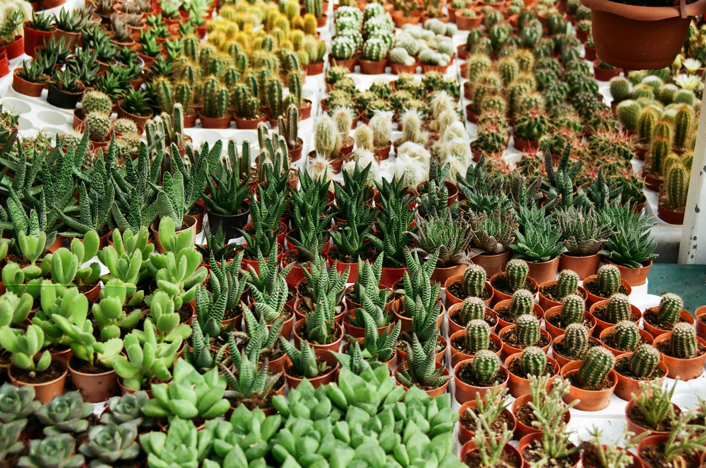

Our Products
At Sprout & Grow, we offer a carefully curated selection of organic plants and gardening essentials designed to help your garden thrive naturally. Every product we carry reflects our commitment to sustainability, quality, and environmental responsibility.
Whether you're growing a backyard garden, creating an indoor oasis, or starting fresh as a beginner, you'll find everything you need right here.
🌸 Flowering Plants
Brighten your garden with seasonal blooms, perennials, and pollinator-friendly flowers. Our flowering plants are grown organically to ensure vibrant color and long-lasting beauty.
🥬 Vegetable & Herb Plants
Grow your own fresh produce with our selection of organic vegetables and herbs. From tomatoes and peppers to basil and rosemary, we make it easy to garden sustainably at home.
🪴 Indoor Plants
Bring nature indoors with low-maintenance houseplants perfect for apartments and small spaces. Ideal for improving air quality and adding a calming touch to your home.
🌳 Trees & Shrubs
Add structure and long-term beauty to your landscape with our selection of shrubs and small trees. All are grown with care using eco-friendly methods.
🌱 Soil & Garden Supplies
Support healthy plant growth with organic soil, compost, fertilizers, and essential gardening tools. Everything you need for a thriving garden ecosystem.
🌼 Seasonal Specials
Discover what’s currently in season, from spring blooms to fall harvest plants. Our rotating selection keeps your garden fresh and exciting year-round.